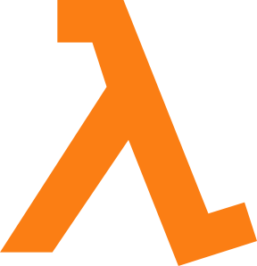
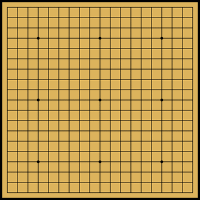
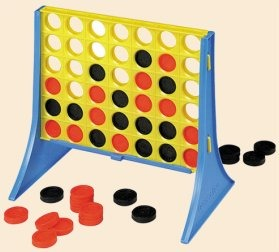
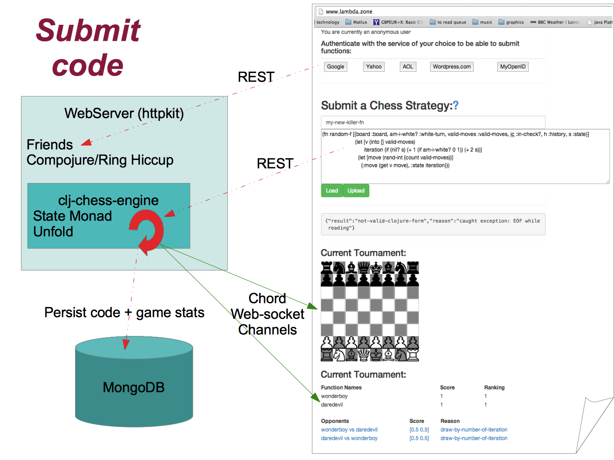
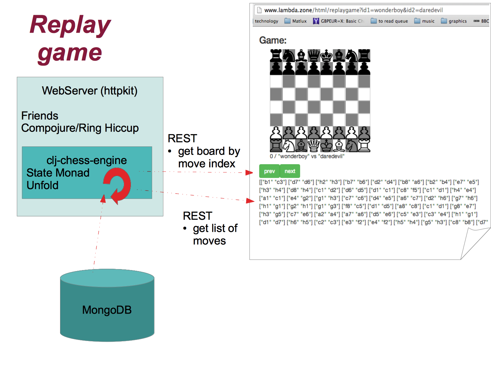

Author:
Mathieu Gauthron
What is it for?
-----------------

Note:
Its aim is to promote games like this.
And...

and...

And many more...
But what do they have in common?
What might an API look like?
Avoiding recomputation
-----------------------
```clojure
(fn [{:keys [board valid-moves am-i-white? in-check? history state]}] ...)
=> {:move [:e2 :e4] :state 42})
```
Note:
It state ready
Possible implementation
-----------------------
```clojure
(fn [{:keys [board valid-moves am-i-white? in-check? history state]}]
(let [v (into [] valid-moves)]
(let [move (rand-int (count valid-moves))]
{:move (get v move), :state nil})))
```
Note:
Here is a suggested implementation...
The idea is I'm not writing the chess engine myself. Other people submit
the chess strategy implementation.
How is the website designed?
Application Stack
-----------------
* Browser
* ClojureScript
* Clidget
* Common
* Async
* Chord/Websocket
* Web Server
* Friends
* Compojure/Ring/Hiccup
* clj-chess-engine
* State Monad
* Unfold
* MondgoDB


The Chess Engine Implementation
Chess Engine building blocks
---------------
```clojure
(defn unfold [g seed]
(->> (g seed)
(iterate (comp g second))
(take-while identity)
(map first)))
```
```clojure
(fn [state]
[value new-state])
```
Note:
To take a leaf from Haskell: who knows what unfold is?
Who knows what fold is?
Who reduce is?
What is this function?
It has a relationship with state monad but I dont have time to go through it.
The take is that I have found these two constructs very elegant to implement a purely function parser
Superb Tables
Item
Value
Quantity
Apples
$1
7
Lemonade
$2
18
Bread
$3
2
```clojure
(fn [{:keys [board valid-moves am-i-white? in-check? history state]}]
(let [v (into [] valid-moves)]
(let [move (rand-int (count valid-moves))]
{:move (get v move), :state nil})))
```
Is this a good example of use of an Atom?
-----------------------------------------
```clojure
(def state-of-world (atom 0))
(defn process-step []
(swap! state-of-world inc))
(for [i (range 10)]
(do (process-step)
@state-of-world))
;;=> (1 2 3 4 5 6 7 8 9 10)
```
But first ...
A Quiz
Who Think Atoms are the best way to manage state in Clojure?
Are Monad for academics and not useful in Clojure?